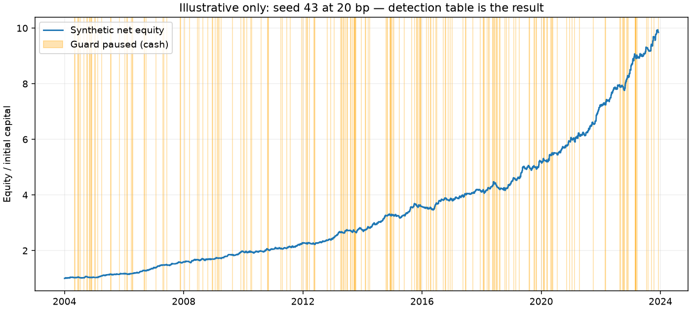
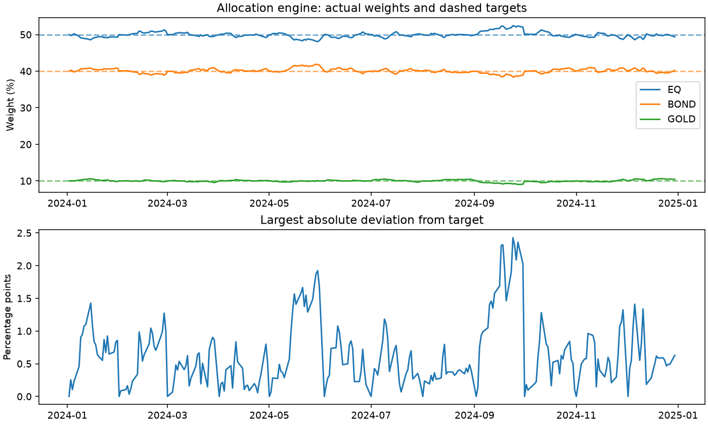

| Effect size / case | Detection / allocation |
|---|---|
| 0 bp (pure noise) | detected 0/20 (false-positive rate) |
| 5 bp | detected 0/20 (detection rate) |
| 10 bp | detected 12/20 (detection rate) |
| 20 bp | detected 20/20 (detection rate) |
| 40 bp | detected 20/20 (detection rate) |
| Rebalancer | holds 50/40/10 within 2.43% drift |
All results are synthetic. These controls test software and statistical detection, not real strategy profitability.
The table is the experiment's result. Predeclared conditional effects are 0, 5, 10, 20 and 40 bp, with the same 60 bp Gaussian innovation standard deviation, 5,200 business sessions, 5 bp cost per exposure change and seeds 100–119 in every row. The 0 bp row is the empirical false-positive rate. Twenty runs per effect give imprecise rate estimates; these are synthetic software controls, not real forecasts.
The same seed supplies identical headlines and innovations across effects. A positive actionable headline adds the listed effect to the following interval's simple return; a negative one subtracts it. Headlines precede the decision close by a full UTC calendar day; returns accrue over the following interval. Every detection requires all four unchanged gates. All five rows are shown; no best effect or seed is selected.
The 100-run ledger is precomputed offline with python scripts/detection_power.py and bundled;
fdp demo reads and validates it rather than rerunning the full experiment.
| Effect (bp) | Seed | All four gates | Sign-test p |
|---|---|---|---|
| 0 | 100 | FAIL | 1.0000 |
| 0 | 101 | FAIL | 1.0000 |
| 0 | 102 | FAIL | 1.0000 |
| 0 | 103 | FAIL | 1.0000 |
| 0 | 104 | FAIL | 1.0000 |
| 0 | 105 | FAIL | 1.0000 |
| 0 | 106 | FAIL | 1.0000 |
| 0 | 107 | FAIL | 1.0000 |
| 0 | 108 | FAIL | 1.0000 |
| 0 | 109 | FAIL | 1.0000 |
| 0 | 110 | FAIL | 1.0000 |
| 0 | 111 | FAIL | 1.0000 |
| 0 | 112 | FAIL | 1.0000 |
| 0 | 113 | FAIL | 1.0000 |
| 0 | 114 | FAIL | 1.0000 |
| 0 | 115 | FAIL | 1.0000 |
| 0 | 116 | FAIL | 1.0000 |
| 0 | 117 | FAIL | 1.0000 |
| 0 | 118 | FAIL | 1.0000 |
| 0 | 119 | FAIL | 1.0000 |
| 5 | 100 | FAIL | 0.1760 |
| 5 | 101 | FAIL | 0.9240 |
| 5 | 102 | FAIL | 0.8740 |
| 5 | 103 | FAIL | 0.9980 |
| 5 | 104 | FAIL | 0.9900 |
| 5 | 105 | FAIL | 0.9980 |
| 5 | 106 | FAIL | 0.2360 |
| 5 | 107 | FAIL | 0.9780 |
| 5 | 108 | FAIL | 0.8200 |
| 5 | 109 | FAIL | 0.8380 |
| 5 | 110 | FAIL | 0.7380 |
| 5 | 111 | FAIL | 1.0000 |
| 5 | 112 | FAIL | 0.9580 |
| 5 | 113 | FAIL | 0.7380 |
| 5 | 114 | FAIL | 0.9360 |
| 5 | 115 | FAIL | 1.0000 |
| 5 | 116 | FAIL | 0.7520 |
| 5 | 117 | FAIL | 0.9420 |
| 5 | 118 | FAIL | 0.5320 |
| 5 | 119 | FAIL | 0.5460 |
| 10 | 100 | PASS | 0.0020 |
| 10 | 101 | FAIL | 0.0140 |
| 10 | 102 | PASS | 0.0120 |
| 10 | 103 | FAIL | 0.1580 |
| 10 | 104 | FAIL | 0.0860 |
| 10 | 105 | FAIL | 0.1560 |
| 10 | 106 | PASS | 0.0020 |
| 10 | 107 | FAIL | 0.0340 |
| 10 | 108 | PASS | 0.0020 |
| 10 | 109 | PASS | 0.0020 |
| 10 | 110 | PASS | 0.0020 |
| 10 | 111 | FAIL | 0.2300 |
| 10 | 112 | FAIL | 0.0260 |
| 10 | 113 | PASS | 0.0060 |
| 10 | 114 | PASS | 0.0180 |
| 10 | 115 | FAIL | 0.1500 |
| 10 | 116 | PASS | 0.0020 |
| 10 | 117 | PASS | 0.0120 |
| 10 | 118 | PASS | 0.0020 |
| 10 | 119 | PASS | 0.0020 |
| 20 | 100 | PASS | 0.0020 |
| 20 | 101 | PASS | 0.0020 |
| 20 | 102 | PASS | 0.0020 |
| 20 | 103 | PASS | 0.0020 |
| 20 | 104 | PASS | 0.0020 |
| 20 | 105 | PASS | 0.0020 |
| 20 | 106 | PASS | 0.0020 |
| 20 | 107 | PASS | 0.0020 |
| 20 | 108 | PASS | 0.0020 |
| 20 | 109 | PASS | 0.0020 |
| 20 | 110 | PASS | 0.0020 |
| 20 | 111 | PASS | 0.0020 |
| 20 | 112 | PASS | 0.0020 |
| 20 | 113 | PASS | 0.0020 |
| 20 | 114 | PASS | 0.0020 |
| 20 | 115 | PASS | 0.0020 |
| 20 | 116 | PASS | 0.0020 |
| 20 | 117 | PASS | 0.0020 |
| 20 | 118 | PASS | 0.0020 |
| 20 | 119 | PASS | 0.0020 |
| 40 | 100 | PASS | 0.0020 |
| 40 | 101 | PASS | 0.0020 |
| 40 | 102 | PASS | 0.0020 |
| 40 | 103 | PASS | 0.0020 |
| 40 | 104 | PASS | 0.0020 |
| 40 | 105 | PASS | 0.0020 |
| 40 | 106 | PASS | 0.0020 |
| 40 | 107 | PASS | 0.0020 |
| 40 | 108 | PASS | 0.0020 |
| 40 | 109 | PASS | 0.0020 |
| 40 | 110 | PASS | 0.0020 |
| 40 | 111 | PASS | 0.0020 |
| 40 | 112 | PASS | 0.0020 |
| 40 | 113 | PASS | 0.0020 |
| 40 | 114 | PASS | 0.0020 |
| 40 | 115 | PASS | 0.0020 |
| 40 | 116 | PASS | 0.0020 |
| 40 | 117 | PASS | 0.0020 |
| 40 | 118 | PASS | 0.0020 |
| 40 | 119 | PASS | 0.0020 |
Predeclared primary seed 43 at 20 bp: detected. This path is illustrative, whatever its outcome; it does not replace the detection-rate table.
The original independent, zero-drift prices and unrelated headlines remain unchanged: 780 price rows and 260 headlines, seed 42. This legacy illustration is rejected by the all-gate rule; it is separate from the paired, 5,200-session 0 bp control in the table. Both sentiment cases use the same loss guard: three consecutive losses or 5% session loss. The demo explicitly resets it every five observed sessions; the library still defaults to explicit reset only. Orange spans label paused cash holdings. Flat segments are intentional; every pause and reset is exported in CSV.

Monthly rebalancing targets 50/40/10 across EQ/BOND/GOLD, with fractional shares and funded 5 bp costs. Maximum observed drift: 2.43 percentage points (not relative percent). Turnover: 1.1960 × starting capital, including initial allocation; costs: 0.0598% of starting capital. No profitability gates apply.
| Asset | Target | Final actual |
|---|---|---|
| EQ | 50% | 49.37% |
| BOND | 40% | 40.19% |
| GOLD | 10% | 10.44% |

Four gates apply only to the two sentiment cases: positive compounded return, one-sided sign-randomization p below .05, deflated Sharpe probability above .95, bootstrap terminal-equity fifth percentile above .8. Both use two assumed trials, 499 randomizations and 299 block bootstraps, seed 42. The sign test assumes a symmetric zero-mean null; short bootstrap blocks and guard dependence limit interpretation.
| Case | Gate | Result |
|---|---|---|
| Pure noise | positive_return | FAIL |
| Pure noise | sign_randomization_p_below_005 | FAIL |
| Pure noise | deflated_sharpe_above_095 | FAIL |
| Pure noise | bootstrap_p5_above_080 | FAIL |
| Planted signal | positive_return | PASS |
| Planted signal | sign_randomization_p_below_005 | PASS |
| Planted signal | deflated_sharpe_above_095 | PASS |
| Planted signal | bootstrap_p5_above_080 | PASS |
Run fdp demo offline.
Summary and full detection ledger · Planted rows ·
Noise rows · Allocation rows.
Calendar and costs are simplified; holdings are marked to market without terminal liquidation. No broker, external assets, JavaScript or live requests are involved.